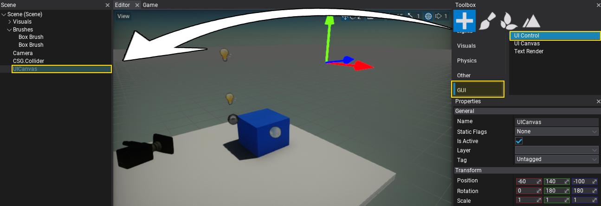

HOWTO: Create a Main Menu
In this tutorial, you will learn how to create a Main Menu for your game.
1. Creating a UICanvas
The first step is to add a UI Canvas actor which is used to render the GUI controls. It supports rendering the GUI in 'Screen Space,' 'World Space', and 'Camera Space'. Use the option - World Space and place it somewhere in front of the camera.
To spawn a UI Canvas use a Toolbox window by dragging and dropping the UI Canvas from GUI section. Alternatively, you can use a Scene Tree window with a dedicated context menu for adding new scene objects.
2. Creating a UIControl
Follow the same steps as in the previous step, except now create UI Control actor that represents a single GUI control. Add it as a child to the UI Canvas (as shown in a picture below).

3. Set control type to Button
For the GUI, use a Button control. To do so, select the spawned UI Control and click on the Set Type button to assign its type to Button. You can pick the item from the list or type to search for it.
Then the UI Control actor will link the created conrol to the GUI. Show the Game window tab to see the progress bar. You can adjust its properties using the panel below the Set Type button.
4. Create more buttons
Duplicate the created button with Ctrl+D or use Shift + Mouse with the transform gizmo to clone the selected button control. As a result prepare more menu options.

5. Create a MainMenu script
Add a new script named MainMenu that will handle the button click events. To learn more about creating and using scripts see this tutorial.
6. Edit the script
Open the script file and write the following code:
using System.Collections.Generic;
using FlaxEngine;
using FlaxEngine.GUI;
public class MainMenu : Script
{
[Tooltip("The menu buttons.")]
public List<UIControl> Buttons;
public override void OnStart()
{
if (Buttons == null || Buttons.Count == 0)
{
Debug.Log("No buttons");
return;
}
foreach (var button in Buttons)
{
button.Get<Button>().ButtonClicked += OnButtonClicked;
}
}
private void OnButtonClicked(Button button)
{
Debug.Log("Clicked: " + button.Text);
}
}
7. Add the script to the actor
Now drag and drop the script to the actor in your scene (eg. Canvas).
8. Link the buttons to the script
Select the actor with the MainMenu script added, set the size of the Buttons list to 3, next drag and drop the UIControl actors with buttons to assign a reference to them for the script.
9. Test it out!
Finally, hit the Play button (or F5 key) and test the script logic. After you click the menu button it will print its text into the Debug window. Use the callback to implement your game logic for starting new game or showing the game options to the user.